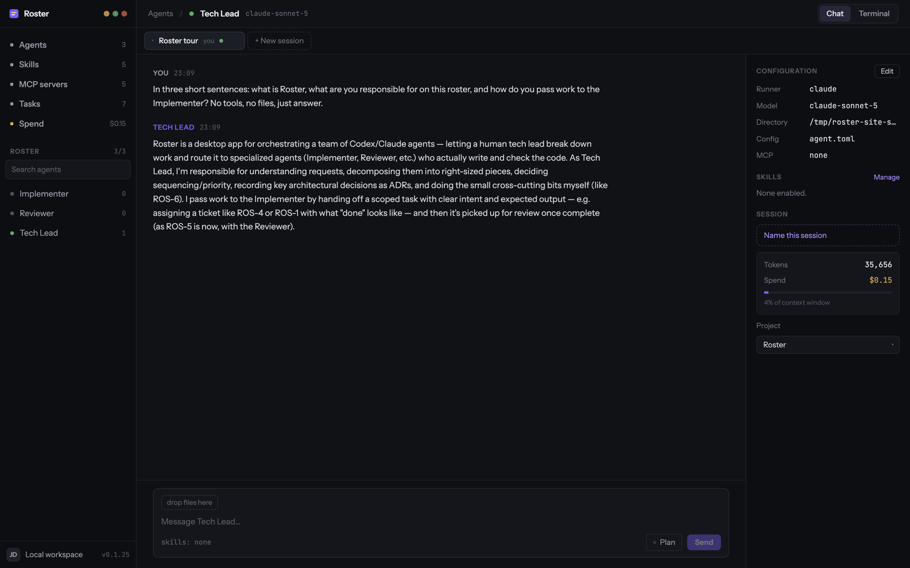
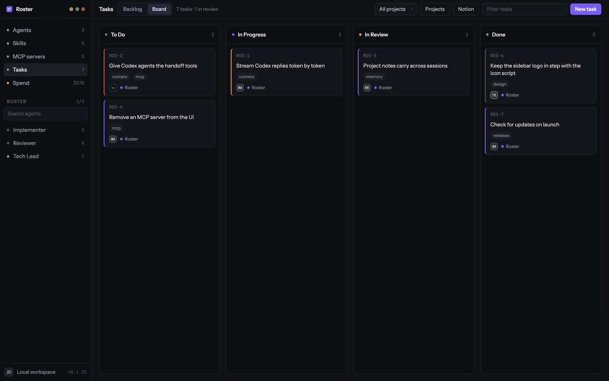
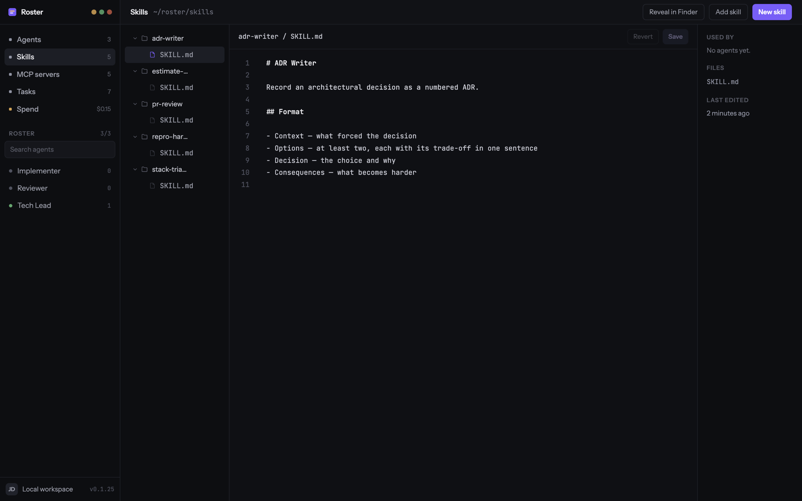

macOS desktop app
Every agent you run, on one screen.
Roster gives each coding agent a name, a model and a directory, then keeps their sessions side by side — streaming replies, live terminals, approvals that wait for you, and a task board the agents move themselves.
curl -fsSL https://raw.githubusercontent.com/jwnwilson/roster/main/scripts/install.sh | sh
Apple Silicon and Intel DMGs on every release. Unsigned, so the installer clears the quarantine flag for you — the whole story is below.

Roster does not implement an agent loop
Every agent on the roster is an agent CLI running on your own account —
claude, codex, or any command you point it at. Roster is the
harness and the window over those processes.
- No API key on the primary path
-
Roster drives the CLI you are already signed into. If none is installed the app still
opens; the agent just reports why it cannot run — not signed in — run
claude auth login— instead of failing silently. - It never executes a tool itself
- The CLI owns the loop, the context window and every tool call. Roster normalises the two event streams into one, shows what happened, and stores it in SQLite.
- An agent is a file you can read
-
Each one is an
agent.tomlunder~/roster/agents/. Edit it in the app or in your editor — a watcher reflects outside changes back into the UI without a restart.
A board the agents can move
Tasks and projects live in the same SQLite file as the sessions. A Claude-runner agent
gets list_tasks, read_task, update_task,
comment_on_task and create_task alongside its handoff tools,
so it can pick work up, move it and comment on it while you watch.
Every change — yours and the agent's — goes through one store method. A card an agent moved writes the same history line as a card you dragged, and the board updates live either way.
Today only the Claude runner can reach the board. A Codex agent can be assigned a task, but cannot pick it up itself.

Skills are folders, not settings
The shared library is ~/roster/skills/<name>/SKILL.md — plain
Markdown with whatever files sit beside it. Write one in the built-in editor, or point
Roster at a directory you already keep, and enable it per agent.
The same principle runs through the app: agent configuration on disk in TOML, project
notes in Markdown, MCP servers in one mcp.json. Nothing worth keeping is
locked inside the database.

~/roster/skills on first run.The rest of the harness
- Approvals that wait
- A risky tool call stops the turn. The agent's card goes amber and keeps pulsing until you open the session and allow or deny it.
- A real terminal per session
- Every session has a shell of its own, in the agent's working directory.
- Plan first, then work
- Ask for a plan and the agent writes one instead of editing. Comment on it inline, quote the line you mean, and approve when it reads right.
- Handoff between agents
- An agent can list the roster and open a session on a colleague to pass work over. The handing-off half is Claude-only; any runner can be handed to.
- Memory per project
-
A project keeps a
NOTES.mdits agents can recall and add to, so the second task on a codebase starts further along than the first. - MCP servers, enabled per agent
-
One
mcp.jsonholds the launch command and environment; each agent picks which servers it gets. Claude runner only. - Notion, if your tasks live there
- Import a Notion database onto the board, and re-import whenever you want it refreshed. The other direction is automatic: a card you or an agent changes is pushed back to its Notion page.
- A local model, if you want one
-
Because Roster drives CLIs, a local model is a runner definition rather than a
provider: point
codexat Ollama or LM Studio and the same event stream comes back.
Install
macOS only — Windows and Linux are untested. You need at least one agent CLI already installed and signed in: claude or codex.
-
The installer script
Picks the build for your architecture, checks it against the checksums published with the release, copies Roster into
/Applications, and clears the quarantine flag.curl -fsSL https://raw.githubusercontent.com/jwnwilson/roster/main/scripts/install.sh | shIf piping a script into a shell makes you uneasy — a reasonable instinct — read it first.
-
Or the DMG
Take the latest release —
Roster-<version>-arm64.dmgorRoster-<version>-x64.dmg— and drag Roster to Applications.Roster is not signed with an Apple Developer ID, so macOS quarantines it and refuses to open it. Clear that yourself:
xattr -dr com.apple.quarantine /Applications/Roster.appWithout a terminal: double-click Roster, then open System Settings → Privacy & Security, find the notice about Roster being blocked, and click Open Anyway.
On first run Roster seeds ~/roster with a starter team — a Tech Lead, an
Implementer and a Reviewer — plus five skills and an MCP config, pointed at whichever CLI
you actually have. It then checks GitHub on launch and offers new releases as they land.
What is still missing
Roster is early, and the README keeps the full list. The gaps most likely to matter on day one:
- Codex and custom runners do not stream — their replies arrive whole.
- Handoff, the task tools and MCP servers reach the Claude runner only.
- Spend is a placeholder screen; per-session token and cost figures are real.
- The composer's attachment chip is decorative — attachments are not wired to files.
- The MCP registry is a static catalogue of nine entries, and servers are removed by editing
mcp.json. - MCP server environments sit in the clear in that file; there is no keychain integration.